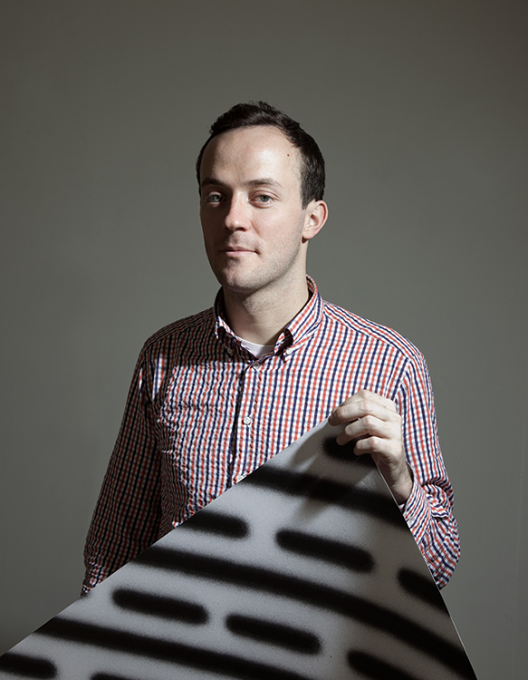

About JURG LEHNI
Jürg Lehni works collaboratively across disciplines, dealing with the nuances of technology, tools and the human condition. His works often take the form of platforms and scenarios for production, such as the drawing machines Hektor, Rita and Viktor, as well as software-based structures and frameworks, including Paper.js, Scriptographer and Vectorama.org.
Lehni has shown work internationally in group and solo shows at the MoMA New York, Walker Art Center,, Centre Pompidou, Institute of Contemporary Arts London, Victoria and Albert Museum, Design Museum London, Kunsthalle St. Gallen, etc.
He runs an independent practise in Switzerland since 2002, but has lived and worked in many places around the globe: As the Arts Council Visiting Professor at the UCLA Department of Design Media Arts in 2012 ~ 2013, running his own studio in London in 2008 ~ 2011, on a Swiss Design Awards residency in New York in 2007, and on a research residency at Sony SET Studio in Tokyo in 2006.
